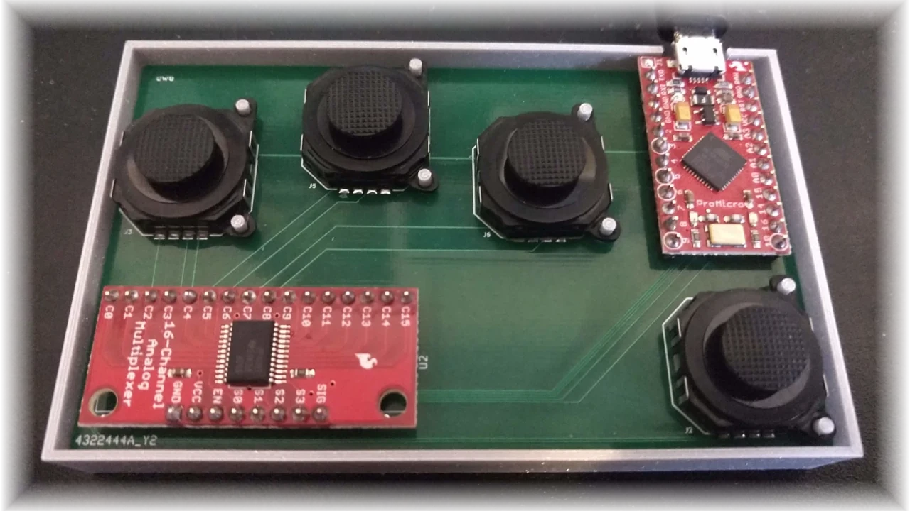
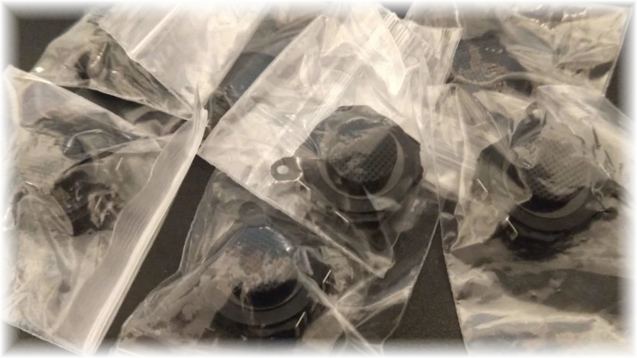
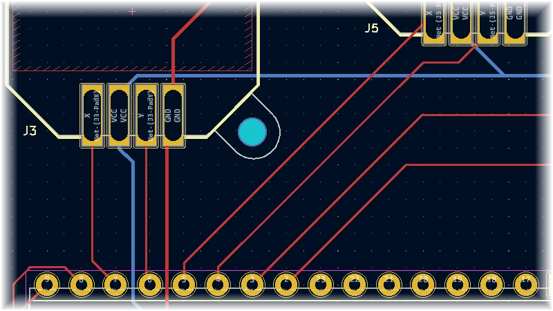
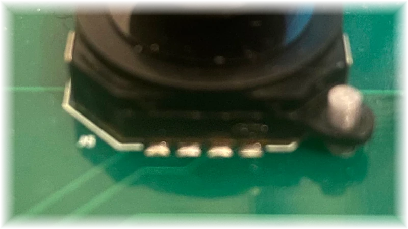
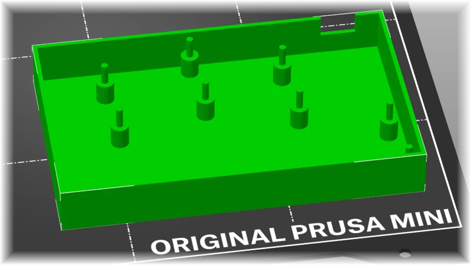
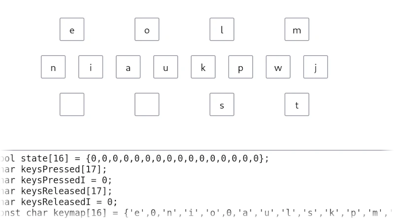

TokiPonaKeyboard
Overview
This keyboard is a a 4-joystick input device, inspired by the simplified language of Toki Pona. Gestures on the joysticks are mapped to keyboard letters. The mapping is designed around the ability to use multiple joysticks at once in order to quickly input text.
The keyboard is designed to be friendly for any beginner hardware hacker. Assembly requires only basic soldering skills and tools.
Hardware Components
- Simple component interfaces and pinouts
- Widely-available parts
The joystick is powered by a 5V Pro Micro Arduino board. This board was chosen because of its built-in keyboard emulation capabilities at a low price point. Other boards that emulate the Pro Micro (including its pinout) can also be used.
The most obvious piece of the keyboard is its joysticks - these are thumb slide joysticks. They are idential to the type of joystick found on the PlayStation Portable. These joysticks were chosen due to their sliding mechanism and low profile keycap design.
The microcontroller and joysticks are linked via a CD74HC4067 breakout, which is a simple analog multiplexer. This simplifies the interface with the microcontroller while still responding quickly to user input.
Printed Circuit Board
- Designed with easy assembly in mind
- Hand-fitted component layout
- 100% through-hole soldering
It's possible to build the keyboard by wiring components together. However, a PCB provides a stable surface for both the components and the user's hand.
The PCB was designed around the size of an average North American male's hand. The spacing of the joysticks can be changed in the KiCad project in order to accomodate different hand shapes and sizes. Since spacing changes don't change the relative position of the joysticks, there should be no need to re-route any traces.
The PCB is production-ready and has been tested; it has been manufactured by JLCPCB, but the parameters of the PCB should be well within range of most large-scale PCB manufacturers.
Soldering
While the entire PCB can be assembled using through-hole soldering techniques, there is a special approach for soldering the joysticks to the PCB. Since the Joysticks are surface-mount components, they do not stick out the other side of the through-holes. To work around this, the holes on the PCB have been elongated. The holes are just large enough to fit the tip of a soldering iron and some solder. By applying solder flux to the joystick and pressing it against the PCB (using a third hand), it becomes possible to solder the joystick pads to the PCB holes.
When soldering, check that the solder "peeks out" of each hole along the side of the joystick. This is a good indication that you've made contact with the pad and that the circuit is complete. If any of the pads are "floating", simply re-apply the iron and add a bit more solder to the hole in order to make a connection. Note that this is all much easier when using flux on the joystick pads.
Keyboard Case
- Simple model topology for easy printing
- Single-piece assembly
The keyboard's case is a single open enclosure designed to support the assembled PCB under the weight of the user's hand. The design accounts for the size of the component mounting holes and most through-hole header lengths. While the case needs no additional hardware (apart from the PCB), it is recommended to put rubber feet on the bottom to prevent the case from sliding around.
The case model also comes with a number of "loose stands" (free-floating posts exactly like the eight that are built into the case). These can be useful during PCB assembly to make sure that the joysticks are properly aligned while soldering.
Microcontroller Software
- Custom microcontroller code
- Flexible keymapping tool
The Pro Micro Arduino board that powers the keyboard uses custom software to turn joystick inputs into keyboard input. This software includes not just the microcontroller code, but a tool for assigning keyboard keys to different joystick actions.